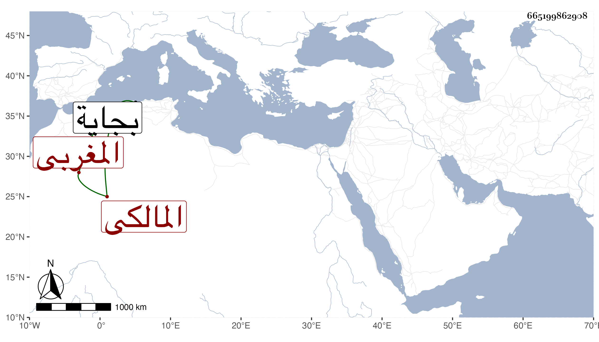

0902Sakhawi.DawLamic.ITO20230111-ara1.EIS1600.665199862908
Biography ID: 665199862908
1024
سليمان بن يوسف بن إبراهيم الحسباوي البجائى المغربى المالكى أخذ عن عمه أبى الحسن على بن إبراهيم ومحمد بن أبي القسم المشدالي وابنه الأكبر أبي عبد الله محمد وآخرين ، وتقدم في الفقه والاصلين والفرائض والحساب والعربية والمنطق وغيرها وكتب شرحا للمدونة وصنف في الفرائض والحساب والمنطق وأشير إليه بالجلالة، وأكره على قضاء الجماعة ببجاية فأقام فيه أزيد من سنتين وقيل نحو أربع سنين ، ثم أعرض عنه ولزم التدريس في بعض المدارس وغيرها والافتاء حتى مات في صفر سنة سبع وثمانين تقريبا وقد زاد على الستين ، وكان يصرح ببلوغه رتبة الاجتهاد ويخالف إمامه في كثير من الفروع وغيرها مع ديانة وتعبد وكرم مع ضيق عيشة رحمه الله . ترجمه لى بعض طلبته ممن أخذ عنى .
